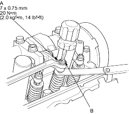
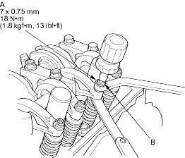
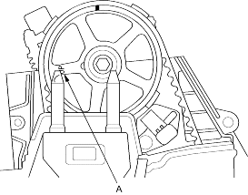

- If you feel too much or too little drag, loosen the locknut (A) and turn the adjusting screw (B) until the drag on the feeler gauge is correct.
D15Y4, D16V2, D16W7, D17A2, D17A5, D17Z3 engines:

D14Z5, D15Y2, D15Y3, D15Y5, D15Y6, D17A1, D17Z1, D17Z2 engines:

- Tighten the locknut and recheck the clearance. Repeat the adjustment if necessary.
- Rotate the crankshaft 180o counter-clockwise (camshaft pulley turns 90o). The ''UP'' mark (A) on the camshaft pulley should be toward the exhaust side of the head.

- Check and if necessary, adjust the valve clearance on No. 3 cylinder.
- Rotate the crankshaft 180o counter-clockwise to bring No. 4 piston to TDC. TDC marks (A) are visible again.

- Check and if necessary, adjust the valve clearance on No. 4 cylinder.